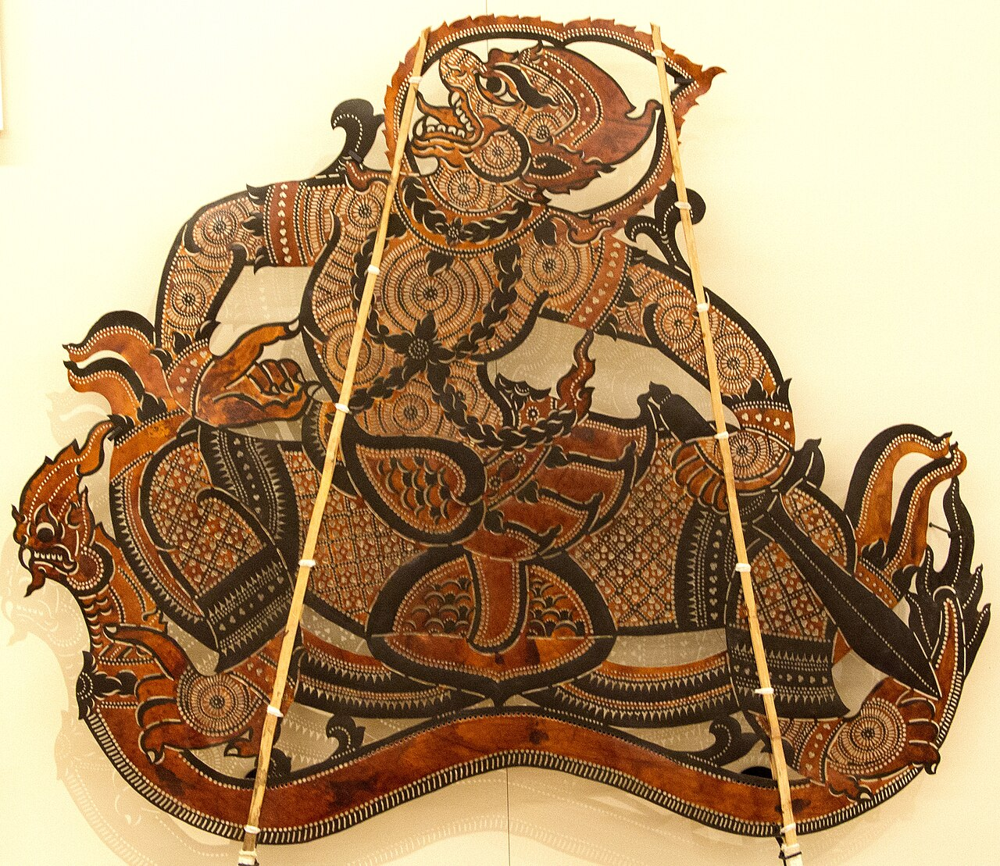

ល្ខោនស្រមោលស្បែកធំ
អាយ៉ងស្បែកធំៗ រាំនៅលើអេក្រង់ពន្លឺភ្លើង — រឿងរាមកេរ្តិ៍ និទានដោយស្រមោល។
ស្រមោលនៅលើអេក្រង់
ល្ខោនស្រមោលស្បែកធំ ជាសិល្បៈសម្តែងដ៏ចំណាស់របស់ខ្មែរ។ អាយ៉ងស្បែកធំៗ ដែលកាត់ឆ្លាក់ពីស្បែកគោដោយដៃ ត្រូវបានគេលើកឡើងនៅពីក្រោយអេក្រង់ស ដោយមានពន្លឺភ្លើងពីក្រោយ — បង្កើតបានជាស្រមោលដ៏ធំ ដែលរាំ និងនិទានរឿង។
អាយ៉ងខ្លះ មានកម្ពស់ដល់ទៅពីរម៉ែត្រ — ជាស្នាដៃសិល្បៈទាំងពេលសម្តែង និងពេលព្យួរនៅលើជញ្ជាំង។
រឿងរាមកេរ្តិ៍
ល្ខោនស្រមោលស្បែកធំ សម្តែងរឿងរាមកេរ្តិ៍ — មហាកំណាព្យជាតិរបស់ខ្មែរ។ ឈុតឆាកសំខាន់ៗ ដូចជាសមរភូមិរវាងព្រះរាម និងយក្សរាពណ៍ ត្រូវបានសម្តែងដោយអាយ៉ងធំៗ អមដោយភ្លេងពិណពាទ្យ និងសំឡេងអ្នកនិទានរឿង។
ការសម្តែងមួយយប់ អាចចំណាយពេលជាច្រើនម៉ោង — ហើយជារឿយៗ ជាប់ទាក់ទងនឹងពិធីបុណ្យ និងការគោរពវិញ្ញាណក្ខន្ធ។
ការរស់រាន
ក្រោមរបបខ្មែរក្រហម ល្ខោនស្រមោលស្បែកធំ ស្ទើរតែរលាយបាត់ — អ្នកសម្តែង និងអ្នកឆ្លាក់អាយ៉ង ភាគច្រើនបានស្លាប់។ ប៉ុន្តែអ្នករស់រានមានជីវិត បានកសាងវាឡើងវិញ ពីការចងចាំ។
នៅឆ្នាំ ២០០៨ យូណេស្កូបានចុះល្ខោនស្រមោលស្បែកធំ ក្នុងបញ្ជីតំណាងនៃបេតិកភណ្ឌអរូបីរបស់មនុស្សជាតិ។ សព្វថ្ងៃ ក្រុមសម្តែងនៅតែបន្តរក្សាសិល្បៈនេះ នៅក្នុងភូមិ និងនៅលើឆាកអន្តរជាតិ។